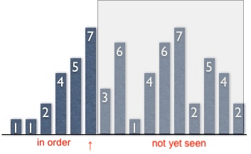
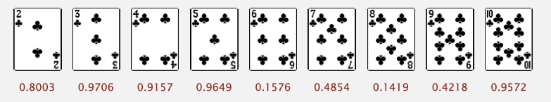
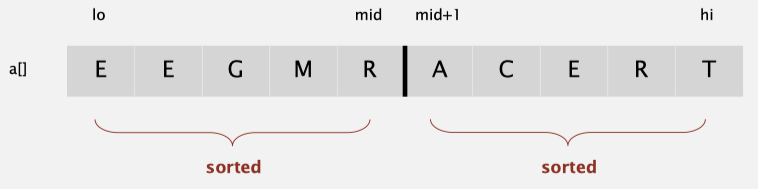

Topic 3: Sorting¶
Selection Sort¶
- In iteration i, find index min of smallest remaining entry.
- Swap a[i] and a[min].
Animation:

public class Selection { public static void sort(Comparable[] a) { int N = a.length; for (int i = 0; i < N; i++) { int min = i; for (int j = i + 1; j < N; j++) if (less(a[j], a[min])) min = j; exch(a, i, min); } } }
Analysis¶
Selection sort uses (N-1)+(N-2)+...+1\sim N^2/2 compares and N exchanges.
Insertion Sort¶
Animation:

- In iteration i, swap a[i] with each larger entry to its left.
Invariants.
- ↑ scans from left to right.
- Entries to the left of ↑ (including ↑) are in ascending order.
- Entries to the right of ↑ have not yet been seen.

public class Insertion { public static void sort(Comparable[] a) { for (int i = 1; i < a.length; i++) { int j = i; while (j > 0 && less(a[j], a[j-1])) { exch(a, j, j -1); j--; } } } @SuppressWarnings("unchecked") private static boolean less(Comparable a, Comparable b) { return a.compareTo(b) < 0; } private static void exch(Comparable[] a, int i, int j) { Comparable temp = a[i]; a[i] = a[j]; a[j] = temp; } }
Analysis¶
Insertion sort uses \sim N^2/4 compares and \sim N^2/4 exchanges to sort a randomly ordered array of length N with distinct keys, on the average. The worst case is \sim N^2/2 compares and \sim N ^2/2 exchanges and the best case is N-1 compares and 0 exchanges.
Shell Sort¶
Shuffling¶
Our goal is to rearrange array so that result is a uniformly random permutation.
Shuffle sort¶
- Generate a random real number for each array entry.
- Sort the array based on generated random numbers.

Knuth shuffle¶
- In iteration i, pick integer r between 0 and i uniformly at random.
- Swap a[i] and a[r].
public class KnuthShuffle { public static void shuffle(Object[] a) { Random random = new Random(); for (int i = 0; i < a.length; i++) { //In iteration i, pick integer r between 0 and i uniformly at random. int r = random.nextInt(i + 1); // Swap a[i] and a[r]. exch(a, i, r); } } }
Knuth shuffling algorithm produces a uniformly random permutation of the input array in linear time.
Quick Sort¶
Quicksort honored as one of top 10 algorithms of 20th century in science and engineering. Quicksort is the default Java sort for primitive types.
Basic plan.
- Shuffle the array.
- Partition so that, for some j
- entry a[j] is in place
- no larger entry to the left of j
- no smaller entry to the right of j
- Sort each piece recursively.
public class Quick { public static void sort(Comparable[] a) { // shuffle needed for performance guarantee StdRandom.shuffle(a); sort(a, 0, a.length - 1); } private static void sort(Comparable[] a, int lo, int hi) { if (hi <= lo) return; int j = partition(a, lo, hi); sort(a, lo, j-1); sort(a, j+1, hi); } }
ANIMATION:

Partitioning¶
The crux of the quick sort is the partitioning process, which rearranges the array to make the following three conditions hold:
- The entry a[j] is in its final place in the array, for some j.
- No entry in a[lo] through a[j-1] is greater than a[j].
- No entry in a[j+1] through a[hi] is less than a[j].

First, we arbitrarily choose a[lo] to be the partitioning item—the one that will go into its final position. Next, we scan from the left end of the array until we find an entry greater than (or equal to) the partitioning item, and we scan from the right end of the array until we find an entry less than (or equal to) the partitioning item. The two items that stopped the scans are out of place in the final partitioned array, so we exchange them.
Continuing in this way, when the scan indices cross, all that we need to do is to exchange the partitioning item a[lo] with the rightmost entry of the left subarray (a[j]) and return its index j.
private static int partition(Comparable a[], int lo, int hi) { int i = lo, j = hi + 1; while (true) { // find item on left to swap while (less(a[++i], a[lo])) if (i == hi) break; // find item on right to swap while (less(a[lo], a[--j])) if (j == lo) break; // check if pointers cross if (i >= j) break; // swap exch(a, i, j); } // swap with partitioning item exch(a, lo, j); // return index of item now known to be in place. return j; }
Analysis¶
- Best case. Number of compares is \sim N \lg N.
- Worst case. Number of compares is \sim \frac{1}{2} N^2.
- The average number of compares C_N to quicksort an array of N distinct keys is ~ 2N\ln N (and the number of exchanges is \sim\frac{1}{3}N \ln N).
Quicksort is an in-place sorting algorithm, but is not stable.
Merge Sort¶
Basic plan:
- Divide array into two halves
- Recursively sort each half
- Merge two halves
Goal. Given two sorted subarrays a[lo] to a[mid] and a[mid+1] to a[hi], replace with sorted subarray a[lo] to a[hi]

Java Implementation¶
Java System Sorts¶
- Has different method for each primitive type.
- Has a method for data types that implement
Comparable . - Has a method that uses a
Comparator . - Uses tuned quicksort for primitive types; tuned mergesort for objects.